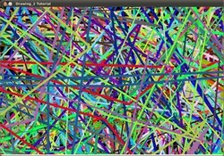

Перекладено українською: Арсеній Чеботарьов, Ніжин 2015. ac2epsilon@gmail.com
Випадковий генератор та текст
Код
- На попередньому занятті (Базове малювання) ми намалювали декілька геометричних фігур, задаючи як вхідний параметр координати (в формі Point), колір, товщину, etc. Ви могли занотувати, що ми надавали цім значенням специфічні аргументи.
- На цьому занятті ми хочемо використовувати випадкові значення для параметрів малювання. Також ми маємо намір вкрити наше зображення великою кількістю геометричних фігур. Оскільки ми будемо генерувати іх на основі випадковостей, цей процес буде автоматизований та виконуватись за допомогою циклів.
- Цей код є в папці прикладів OpenCV. Також ви можете отримати його тут. (насправді буде найкраще, якщо ви відновите код прямо по самому тексту, додаючи непрописані речі, такі, як декларації змінних, файли заголовків, тощо. Ефект від такого навчання буде значно кращим. прим.перекл.)
Пояснення
-
Давайте почнемо з нашої функції main. Ми бачимо, що перша річ, що ми робимо - це створюємо генератор випадкових чисел, Random Number Generator (RNG):
RNG rng( 0xFFFFFFFF );
RNG реалізує генератор випадкових чисел. В цьому прикладі rng є елементом RNG, ініціалізований значенням 0xFFFFFFFF
-
Потім ми створили матрицю, ініціалізовану нулями (що означає, що це виглядатиме як чорний прямокутник), задаючи висоту, ширину та тип (загально прийнятно брати 640 пікселів ширини, та 480 висоти, що буде гарно виглядати на більшості моніторів. прим. перекл.):
/// Ініціалізуємо матрицю, заповнену нулями Mat image = Mat::zeros( window_height, window_width, CV_8UC3 ); /// відображати її на протязі DELAY мс imshow( window_name, image );
-
Тоді ми переходимо до малювання шалених речей. Після того, як ви подивитесь в код, ви побачите, що він загалом поділений на вісім розділів, що визначені як окремі функції:
/// Тепер намалюємо декілька ліній c = Drawing_Random_Lines(image, window_name, rng); if( c != 0 ) return 0; /// трохи прямокутників c = Drawing_Random_Rectangles(image, window_name, rng); if( c != 0 ) return 0; /// еліпси c = Drawing_Random_Ellipses( image, window_name, rng ); if( c != 0 ) return 0; /// полігони c = Drawing_Random_Polylines( image, window_name, rng ); if( c != 0 ) return 0; /// зафарбовані полігони c = Drawing_Random_Filled_Polygons( image, window_name, rng ); if( c != 0 ) return 0; /// кола c = Drawing_Random_Circles( image, window_name, rng ); if( c != 0 ) return 0; /// текст в випадкових позиціях c = Displaying_Random_Text( image, window_name, rng ); if( c != 0 ) return 0; /// та нарешті дещо велике c = Displaying_Big_End( image, window_name, rng );
Всі ці функції слідують одному шаблону, так що ми проаналізуємо тільки деякі з них, оскільки це стосуватиметься і інших. (Насправді код трохи нудний, раджу видаліти змінну с, та пов'язані з цім перевірки
if( c != 0 ) return 0;
Скористайтеся з можливості С++ ігнорувати результат функції, тому можете не модифікувати кожну з функцій малювання. Тоді поведінка зміниться на краще: коли користувач натискає клавішу, програма перериває малювання поточної фігури, та переходить до наступної. Таким чином можна задати досить довгі послідовності з багатьох тисяч елементів, але за бажанням користувача переривати малювання, та загалом повністю ознайомитись з прикладом за декілька секунд. прим. перекл.)
-
Подивимость на функцію Drawing_Random_Lines:
int Drawing_Random_Lines( Mat image, char* window_name, RNG rng ) { int lineType = 8; Point pt1, pt2; for( int i = 0; i < NUMBER; i++ ) { pt1.x = rng.uniform( x_1, x_2 ); pt1.y = rng.uniform( y_1, y_2 ); pt2.x = rng.uniform( x_1, x_2 ); pt2.y = rng.uniform( y_1, y_2 ); line( image, pt1, pt2, randomColor(rng), rng.uniform(1, 10), 8 ); imshow( window_name, image ); if( waitKey( DELAY ) >= 0 ) { return -1; } } return 0; }
Ми бачимо наступне:
-
Цикл for буде повторюватись NUMBER разів. Оскільки функція line всередині циклу, це означає, що буде згенеровано NUMBER ліній.
-
Лінії обмежені в прямокутнику pt1 та pt2. Дляpt1 ми бачимо це:
pt1.x = rng.uniform( x_1, x_2 ); pt1.y = rng.uniform( y_1, y_2 );
-
Ми знаємо, що rng є об'єктом генератора випадкових чисел. В коді вище ми викликаємо rng.uniform(a,b). Це генерує нормально розподілені випадкові числа в диапазоні між значеннями a та b (включаючи a, виключаючи b).
-
З приклада виде ми виводимо, що pt1 та pt2 будуть випадковими значеннями, так що розміщення ліній буде майже непередбачуване, даючи гарний візуальний ефект (результат можна бачити наприкінці).
-
Подальше достеження показує, що в аргументах line ми вводимо колір наступним чином:
randomColor(rng)
Ось реалізація цієї функції:
static Scalar randomColor( RNG& rng ) { int icolor = (unsigned) rng; return Scalar( icolor&255, (icolor>>8)&255, (icolor>>16)&255 ); }
Як ми можемо бачити, вона повертає Scalar з трьома випадковими значеннями, що використовуються як R, G та B параметри для кольору лінії. Таким чином колір також буде випадковим.
-
-
-
Пояснення вище застосовується для фукнцій, що генерують кола, еліпси, полігони, тощо. Параметри, такі як центр або верхівки також генеруються випадково.
-
Перед закінченням ми також подивимость на функції Display_Random_Text та Displaying_Big_End, оскільки вони мають декулька цікавих особливостей:
-
Display_Random_Text:
int Displaying_Random_Text( Mat image, char* window_name, RNG rng ) { int lineType = 8; for ( int i = 1; i < NUMBER; i++ ) { Point org; org.x = rng.uniform(x_1, x_2); org.y = rng.uniform(y_1, y_2); putText( image, "Testing text rendering", org, rng.uniform(0,8), rng.uniform(0,100)*0.05+0.1, randomColor(rng), rng.uniform(1, 10), lineType); imshow( window_name, image ); if( waitKey(DELAY) >= 0 ) { return -1; } } return 0; }
Все виглядає знайомим, окрім виразу:
putText( image, "Testing text rendering", org, rng.uniform(0,8), rng.uniform(0,100)*0.05+0.1, randomColor(rng), rng.uniform(1, 10), lineType);
Що робить функція putText? В нашому прикладі:
- Малює текст “Testing text rendering” на image
- Верхній лівий кут тексту буде розташований в Point org
- Тип шрифту буде випадковим в певному диапазоні.
- Маштам шрифту задається виразомrng.uniform(0, 100)x0.05 + 0.1.
- Колір тексту є випадковим (задається randomColor(rng))
- Товщина тексту в диапазоні від 1 та 10, що задано як rng.uniform(1,10)
Як результат ми отримаємо (аналогічно з іншими функціями) NUMBER текстових рядків поверху зображення, в випадкових місцях.
-
Displaying_Big_End
int Displaying_Big_End( Mat image, char* window_name, RNG rng ) { Size textsize = getTextSize("OpenCV forever!", CV_FONT_HERSHEY_COMPLEX, 3, 5, 0); Point org((window_width - textsize.width)/2, (window_height - textsize.height)/2); int lineType = 8; Mat image2; for( int i = 0; i < 255; i += 2 ) { image2 = image - Scalar::all(i); putText( image2, "OpenCV forever!", org, CV_FONT_HERSHEY_COMPLEX, 3, Scalar(i, i, 255), 5, lineType ); imshow( window_name, image2 ); if( waitKey(DELAY) >= 0 ) { return -1; } } return 0; }
Окрім функції getTextSize (що отримує розмір тексту аргумента), в тексті циклу можна помітити нову операцію:
image2 = image - Scalar::all(i)
Таким чином image2 є різницею image та Scalar::all(i). Фактично, те що відбувається, це кожний піксель image2 буде результатом віднімання кожного пікселя image мінус значення i (пам'ятайте, що кожний піксель представлений декількома значеннями, такими як R, G та B, так що кожний з них буде модифіковано).
Також пам'ятайте, що операція віднімання завжди виконує внутрішньо операцію підсвітки, що означає, що отриманий результат буде завжди в дозволеному диапазоні (не буде від'ємним, та в диапазоні 0 та 255, в нашому випадку).
Результат
Як ви тільки що бачили в розділі Код, програма буде послідовно виконувати різні фукнції малювання, що будуть продукувати наступне:
-
Спочатку NUMBER ліній з'явиться на екрані, так, як можна бачити на цьому скриншоті:


-
Потім з'являться інші фігури, на цей раз прямокутники.
-
Далі еліпси, кожний в випадковій позиції, випадкового розміра та випадкової довжини дуги:


-
Тепер полігони з сегментами, знову в випадковому порядку.

-
За ними послідують заповнені полігони (в цьому прикладі - трикутники).
-
Остання фігура - кола!


-
Наприкінці з'явиться текст “Testing Text Rendering” з різними шрифтами, розмірами, кольорами та в випадкових позиціях.
-
І великий завершальний аккорд (що також є великою правдою):